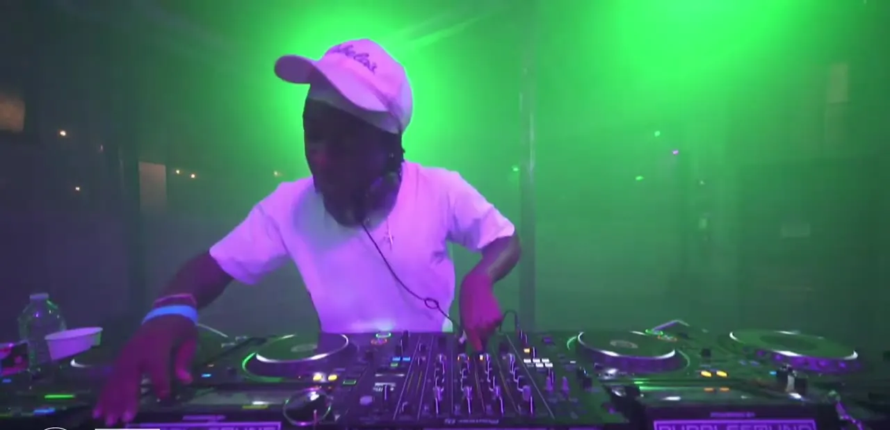
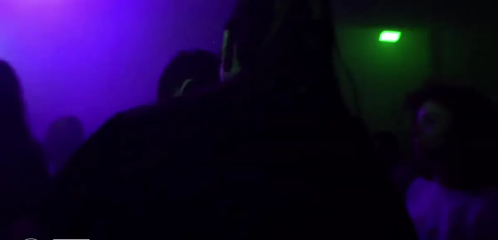

boiler room
A SXYLK set for Boiler Room Festival 2021 in New York, live from Patia's Fantasy World with Jameson.
- Role
- DJ
- Place
- New York, NY
- Dates
- 2021
- Disciplines
- DJ performance, Live mixing

The brief
Boiler Room Festival 2021 came to New York with a lineup that ran from Ron Trent and Kyle Hall to Mick Jenkins and Le1f.
I played as SXYLK, live from Patia's Fantasy World with Jameson. Boiler Room filmed the set and published it on its YouTube channel.
What I did
The set
A 36-minute DJ set as SXYLK, live from Patia's Fantasy World with Jameson.
The festival
Part of Boiler Room Festival 2021: New York City, alongside stages curated by Ash Lauryn and Papi Juice.
Results
- 36 min
- set, filmed by Boiler Room

